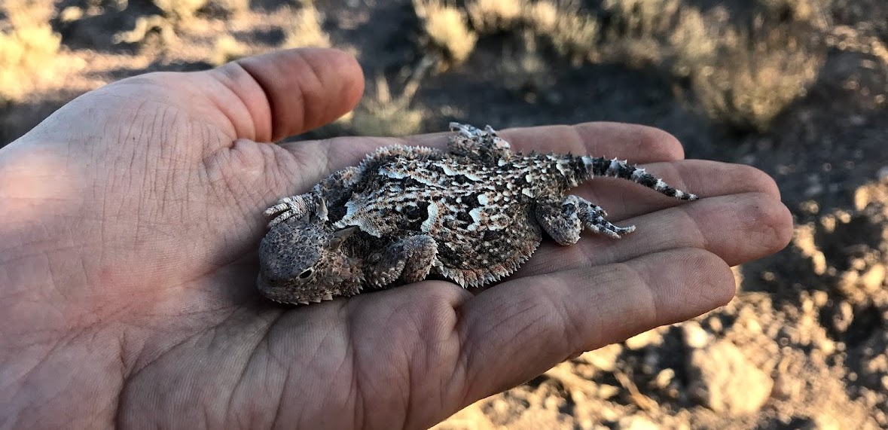

![](https://lh3.googleusercontent.com/fife/AAWUweXVdEtz0SdoLDnLkgE9evehBOocReotdnLlnn2HKlRLnKntd3u-gt9ZQTsUliNzu_CK9mkbd1jglUboMkzIaAmwUUoSR--uTle-hZFMVkLiqV6NZnpUrBZp2lnKF4dV2puZyiGjnD1kq3syknaFaNbcBf3wJ6hLtVlsArNykxdhZJWxzeq4vultfHPqI2c4DCmaOS7WA2yfu9gMhtMilwQFY1bPg8mIt86S3NfqWtk_ZVwWdu3Dy2X0WIY7LeSYY6VfSWElIWM9cAp1YGQRMSQOVqdlsiDH-rizHPq5Mlzi-J2-2jNig8HuzTS3jx9RqFl2gEl59ziYSYSs0d0K6psbB015GzcQbSZtBu98ortedG0RmUfqAiuZFjPRAhVez21Qplw0z182DCRhzZoqEc2RXgXq0fNKwtoQUlU0ctXZHeZ29upjrsGaAO0mhpcvleb5aqFZIMvoHIj_lZUTseU5X6DwVDuMEoLXj0EhZucf-mlk9tuwCNl4lg8c3j34ti67foR4pndGgTu4zZmsbUGdVIntmPEAMC3XaZA0--Ti74wTEI4U-h9tzmHyIl6bcHBH5H0Fj98Yd7gLj-LCyytoE5UmfhKKJ_MpYm16fbpv1v2_YeweaNkUa8XRXDdRTTt2cdbMKHNimj3GvvuzqOJ8CMaztF_ZPBfRA1hNVLsBPmINXyBto2e1GjufNOKLpTqePFCcx58PBQKzYJZpd5OIObgQSBQUU4bXVLUbcqbAtKH-tE1rXpK8tQfnpWRPi1YhpDOg9IhAty_tgBICAXP1Ql7p-0UlM2oeHfm0jjNenflIyFz5sHfF7BWmcXbKgfBg7y0fYnflBttpaHFzY86k-OKGfY80MZjJ-qSQnFJEuolbfz63-6S5HtH5MpYVii-hsveCSAP0HegDXgy-w5VhXkh6VtN65DeS-v09Jdz4grDiyxg0f_BtwXAuYnFJQYUXDFIFrNjia7ULtYrEkaHm06aD8rWuhKoxW7ZbhXAKnApW1MvKXr8tMkRy7xHgnTA-nVxhN8hXnuwZminJnhEEQGcq6oJqdYMrL-B5_SPQ_DajtLzo5wD3TQJFtQaYHqnVbuo-OYf-Xim_8Bl3BFEhdrdTT7DCMU1LosjvKKdpobBJL4-ssZYeJgLxXygJ_o7BvAtGQJNHvi6kGHoEvJzO1UcSA-TmgWZ5ESDCNV6iyfidhUn03Dm0DwrUIyqd_TYTKJwj7olyI7uLnNYCrXM9JRgCN9-tKh5o3IRVdsn9jcPnprlktEPbDhwiLDZANPjlEL1TT-1OZiBa0aHo8m8Md9C0lmbcStCzLeVbU6BI6unGB6MQAepOQyPqGwMurv57-JwLi6bgLQjZd9huM6_R45EhGCUD6EpK0lImHkdudCAL6utT2cl543SIvcdjGAdRvL8V4ZRscAumogNCH9vGEBDOWyCECCe_BZNqaQP0r9Nr7a0t7Dzd8pIm7fkZ2gSTQqkSBFezkOEaEiyPJ2lqYzuYRGznNrE6sJbM-mT11UbDCVarnMEID336YckNSst-l9HlrOQPn20uoKUlzLaWw2yXtowwmT63CnP8Nkwg7E4kkgE9yQFjo3xoC6vQG7V37Gb4h6D2VFQviEKrwhPtRxwu5cU0i8BVxWf7OTMpikJ3giHzfUB_PAXkBEbE9JKwuSsSOgONtNEQEA340Mnp0aDBLp5ZEpkaiFJpEivZ6Kbal9SaktxAnm6xnkl7IHm5YxtPuqFM1Y-0_MdSkLL5qu-5kOEdpo6eQ43vsGkHptrsa7plgkUT-hnr8dkoECZB0BzEImuoMZK42JC1xTTqAOydRJoLm8BhY4a9lXj-h8dyrdFeuesoGAuYpjlTAQfhcETURy5OeV0ysl5Xr4qTnUadDwUQBfVec3HHe-mUVoqYZQsKR3RrYSQcbegiJufNFQFZJz6gC9kpwFomSHzPH_89-BZ1pFi-GGUVRJtxGkerx6NF02F3t7aZ3A9k3FInIFt8tEX1wHMmx051Eqa7MbmWg651RzxfKGMyCfLZsfmzNDhu_AfxOCH6lKtC8_qTV9JDMcc7RgUVU3mF8-rRT4PgQf9nF32dlIaNV24oVROkzgVpck_XNyEeO4k1lyL_MlY4toeXccQflwlONl2N-KQFO9F8dacrLcjGjSmya1_Nyx7Y_zsaNkZX2XQGGctoQa7xa8wtnpeZkCHTVgZsd8sK8o9zCgEkYWMBa-rrmFnSHfd6zD5RGC5Qbd7rn-tbLCz_h1NbQD8bLhSLuDhnA3_SeeGMtJMLaLkUM63Bu8zVMZi1XcknHD_5K0WPS0ucc-dXoumFIauqA0-qobW9adlpEXNpV2ohIMMPlqNpAY-3aMnD9wNt_TNr7EiSrBRgMlRaKc7nB4LA3X8ACWKreCJYEMRmti4gSkUMim0H9Bm9wCSKbn5-7_wEs_nI-70gb2gvKRzJLvQOoUh_D8A8MbmSsVXXe5HIpAxTE6QWY2WbAyRXzFp075BblPiRWdjduqICQmfYzPGQ5XXzblfm5Df6y62ULQXiMme4gnDa0_Nm4Faa4ht5P0UiBB5L5izLiLxYmDihpSMHh4qPFz487B47OjT6-Hk1hOGs1kdOBM0xvyPt8iq1zaioOuW8igu-tlpyqo-15Alu0Dgsrz4nmRQEf5X0BJf1ab-3QPpDX0zURBOwpoWAiFTW_gOFvYIqA3fj9yYNwpWyZfQv7y5bFsmhmOp_WXqlpkioExFkDiAW5LHBiTaKTvPbfiyX0ZUGFqllBiTGHEtntehqIfxlFIjRXzD8oGgt55ZUwagocZp1s-FMV_V7aGl5HwaAUSO7EOkzqZ7gD1UET4ZohjJIpxvzHy3otRMUejYHws7xufCHO3uBPva-_3YrFAnjxxfvVBixzkgDi81pl58KGtCs670OvHmj9mxxz5CkzUT57S4LTtMVEYNZx1QjllcKtVxOLFZP-4chQLSQcziOapKIvhb6qIA18Oqii2HOd8rkfaSXkq95TuGPUvpjWqLqz2No_yUa-25jQI9YIAuDDiPmnTbVVdFHRjCBFKUuQqI92zt1rCu2BPObhJaTASEQC4PhQXur9cYniP2KiAJK43ec4uKuFnkTrsyE77cdxMyQQpGPArKNd6siSI8X1-UHBlBQeMbU85-nWH2NOmXGPUwnbxUxqRH8uUBN2DR4_69Dea-c-g35eYX-c3eMI2ADJPKPhb2evQoRfOwFKAovyeP40T6zjevpW_qzlW5Bp6ySsvz2c0cVtR-x-mkZcW2WrlMskVeEXaiwa60isGzOKp2DVdwfwDxF-OPLp2NUjb9KR__jcV56yBWaQ3uprBJFYtAeWh245UALyF7_lL3ofsASAgnn6kfn61xxIvlDWkTBZDvS0T3lVVexJ-7yvb2A6PZn-0vFZVzWMtfKvUtayx-CNq7wnumkGbcKTNiEKwYy1YY1_V1gB4EUic8ZA7hj2GBCv0fieYSxxsbcEIxzKigErup4ilNihF0FmM8Lv3xz6zBqHFXebtoaEtpf8YRkKvFbO5dYOcQwLrD44y2NlcJWPKXxp21IE86mYK4cC7dENJZzLO5Qefe1vvoY3tXjlnl0WATuEu17oxNIriGGM7OY5Ysn7cLg1LQbQiLbxL1hvfMRJ7sqbAIJ9hDa7Oxq5oAyxtqqriWmggjFXBr1akBoFmwcCcl1IfvgK_IuZPerh32J6h1Vs55aAvn4MKo5779u93mtGMsRVtwZ8O2LfjSQ3vtXZ4EB=s960-w960-h720-no?authuser=0)


Research Experience
Graduate Thesis
Master's thesis on the spatial ecology of Gila monsters (Heloderma suspectum).
Undergraduate Thesis
Bachelor's thesis on the effects of poultry farming on stream fish diversity and richness.
REU
Research Experience for Undergraduates (REU) position studying habitat associations of songbirds in an old growth forest.
Other
Surveys and monitoring for fish and reptiles.